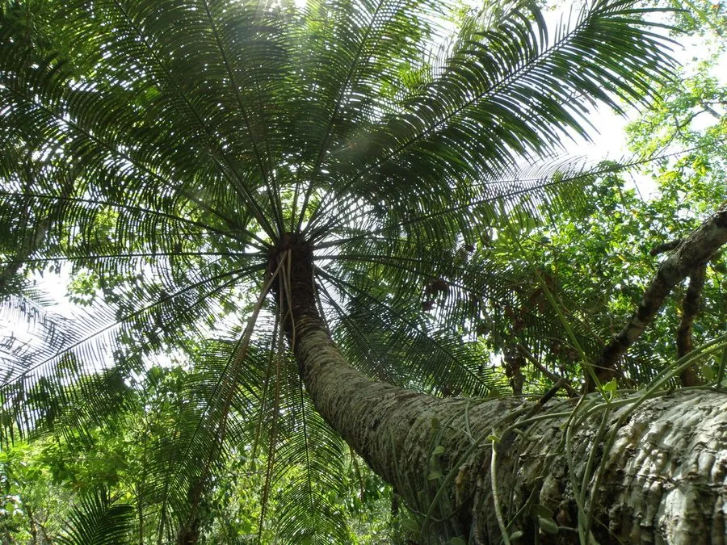

蕨类与裸子植物 · 植物界
华南苏铁 Cycas rumphii

华南苏铁的小叶宽大、叶缘有刺，是分布于华南沿海与东南亚的苏铁类植物，被列为国家一级重点保护野生植物。
- 分类
- 门裸子植物门纲苏铁纲目苏铁目科苏铁科属苏铁属
- 栖息环境
- 沿海灌丛与低山丘陵，喜温暖湿润、阳光充足，耐盐雾
- 地理分布
- 中国广东、广西、海南沿海及东南亚、大洋洲北部
- 保护级别
- IUCN 暂无评估；中国国家一级重点保护野生植物
物种志
华南苏铁是苏铁科常绿木本植物，茎干高 1–4 m，表面有叶痕。羽状叶长 1.5–3 m，小叶宽大、线状披针形，边缘有刺状齿，深绿色有光泽。雌雄异株，雄球花圆锥状、直立，雌球花扁平，种子近球形，成熟时橙红色。
华南苏铁分布于中国广东、广西、海南等沿海地区及东南亚、大洋洲北部，多生于海滨沙滩后的灌丛与低山丘陵，喜温暖湿润、阳光充足的环境，耐盐雾、耐旱。它靠种子繁殖，生长缓慢。苏铁类是古老的种子植物，华南苏铁因叶形宽大、边缘有刺而容易辨认，也是华南园林中的观赏植物。由于野生资源被采挖和生境破坏，被列为中国国家一级重点保护野生植物。
形态与习性
- 茎干高 1–4 m
- 叶羽状复叶，长 1.5–3 m
- 小叶宽大，边缘有刺状齿
- 雌雄异株
- 保护国家一级重点保护野生植物
趣味知识
- 华南苏铁的小叶边缘有刺状齿，容易和别的苏铁区分。
- 它常生于华南沿海，耐盐雾、耐旱，适应性较强。
- 华南苏铁野生资源稀少，被列为国家一级保护野生植物。